SILENT WAR:
The United States' Submarine Campaign
Against Imperial Japan, 1941-1945.
Board Game Designer: Brien Miller
Game Development: Stephen Jackson
Graphics: Brien Miller
Copyright 2005 Compass Games, LLC.,
P.O Box 271, Bloomfield, CT 06416
VASSAL MODULE CREATED UNDER
LICENSE FROM COMPASS GAMES LLC.
A very special thanks to Jim Miller for
Vassal Module Beta-Testing & Data Verification!
YOU MUST PERSONALLY OWN A COPY
OF SILENT WAR TO USE THIS MODULE.
Section 1 - General Info
Section 2 - War Period Cups
Section 3 - Combat
Section 4 - Ultra
Section 5 - Re-seeding Cups
Section 6 - Dynamic Menus
Section 7 - Known Problems
Section 8 - Miscellaneous
|
1. General Info: As with almost all Vassal modules, right click on most everything to learn the counters' capabilities and/or special features. (also see section 6 below!)
2. War Period Cups Information:
| |
I. The WAR PERIOD CUPS displays are divided into three areas. The top (cross-hatched) section is for Setup. The middle section is used when re-seeding the cups. And the bottom area is used for actual play. The first time you open one of the WAR PERIOD CUPS display, it will probably look similar to this...
|
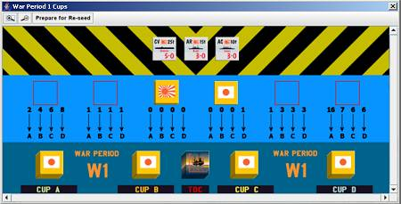
| |
II. Setup: Open the COMBAT DISPLAY (F4) and the appropriate CUPS display (F5-F9) for the current war period, then resize both windows to match the following screen capture...
|
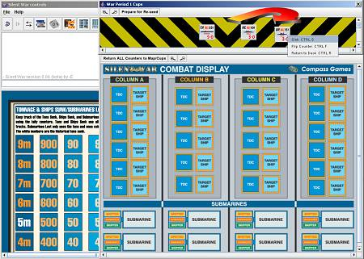
| |
Next determine if any of the counters in the cross-hatched area should be added to the cups or sunk for that War Period. Then drag each counter to the side and right click it for a menu that will allow you automatically place each ship in the correct cup or "sink" it for the current War Period.
Note that if you should sink any of the "Named-ships" during play, DO NOT hit the "RETURN ALL COUNTERS..." button detailed below, until after you right click that ship and select "SINK." (This will prevent that counter from returning to the cups for the current war period) It is recommended you go ahead and "SINK" that same ship in/on succeeding WAR PERIOD CUPS displays, to avoid forgetting later in your campaign. (also note the ability of the Japanese ships being able to drop a "DAMAGED" counter if face up on the Combat Display)
|
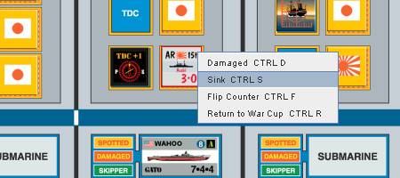
| |
III. Next scroll the CUPS window down to the play area and proceed with your game. Your display should be sized and aligned something like the following for playing Silent War...
|
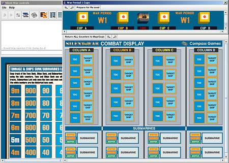
3. Combat Information:
| |
I. Select your sub(s) for combat right click for the menu and select "ATTACK! FLOOD TUBES!" (CTRL-A) to send the sub to the COMBAT DISPLAY (F4). Note your sub will drop a CURRENT AREA MARKER.
|
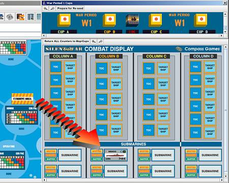
| |
II. Then drag the appropriate number of ship counters from the appropriate cups, to the appropriate sections of the COMBAT DISPLAY. Note that it is important to the automation in this module, that the ship counters are placed in the correct columns. Then drag the appropriate number of TDC markers to where you've decided (placement is not as important for the TDC markers, as it is for the ship counters)
|
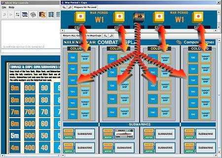
| |
III. Once you are completely finished with a particular combat, hit the long-winded button at the top of the COMBAT DISPLAY that reads "RETURN ALL COUNTERS TO MAPS/CUPS." (Warning - please read Section 2-II above and Section 7 below!) Note that returning your sub to the patrol map will not remove the CURRENT AREA MARKER that was dropped in the previous step. Once you've completed all combat for the turn, use the button at the top of the module (F3) to remove both the CURRENT AREA MARKERS and ULTRA AREA MARKERS.
|
4. ULTRA: Speaking of ULTRA AREA MARKERS, clicking/selecting the upper left corner of each patrol area's AREA ACTIVITY CHART, and then hitting ENTER or CTRL-F will flip invisible ULTRA AREA MARKERS...
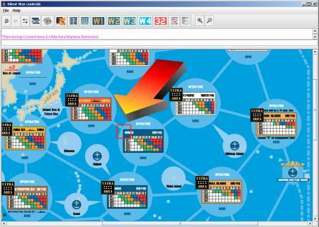
5. Re-seeding the Cups: While the WAR PERIOD CUPS have been pre-seeded for each War Period, it is suggested by Brien Miller (designer of Silent War), that the War Cups be Re-seeded not later than two months game time. To do so in this module, is relatively easy...
| |
I. Ensure the COMBAT DISPLAY (F4) is empty of all counters (use the "RETURN ALL COUNTERS..." button in that display).
II. Re-size the WAR PERIOD CUPS display to show both the re-seed area and the play area.
|
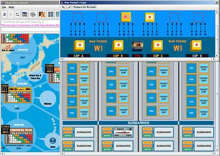
| |
III. Hit the "PREPARE FOR RE-SEED" button (in the appropriate WAR PERIOD CUPS display) and the WAR CUPS should partially empty, while the re-seed cups should fill.
IV. Drag the appropriate number of counters from each re-seed cup to the appropriate cup. Note you may right click on a cup and pull multiple counters out at one time. Also note the number of counters, and to which cup, is annotated on each WAR PERIOD CUPS display.
|
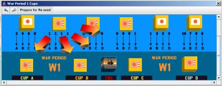
6. Dynamic Menus: Submarine menu commands are contextual, primarily based on location, but also on the rotation of the counter. To help illustrate this, plus highlight particular menu items, let's follow the USS Perch on a short patrol...
| |
I. USS Perch is starting at Sub Base Manilla and here is the menu that is available. Note the highlighted selection...
|
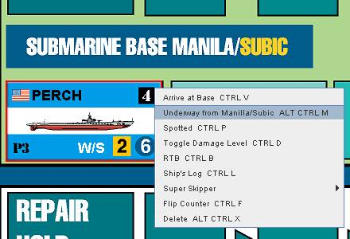
| |
II. Selecting UNDERWAY FROM MANILLA/SUBIC above has moved the counter to the Manilla/Subic area of the Patrol Map......
|
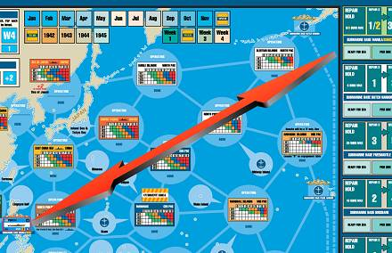
| |
III. Okay, USS Perch has made it's way to the North Philipine Sea and is about to enter into combat...
|
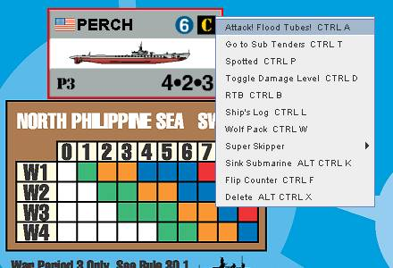
| |
IV. As described in Section 3 above, USS Perch's counter has been sent to the Combat Display after dropping a "CURRENT AREA" Marker...
|
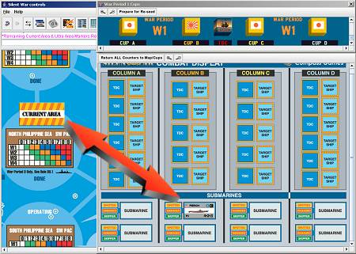
| |
V. Combat would proceed as in Section 3 above, but what wasn't mentioned there, is that the "RETURN ALL COUNTERS..." button is merely auto-selecting EACH counters' variation of the "RETURN TO (x)" menu command, and as such, it is very important to read Section 7 below.
|
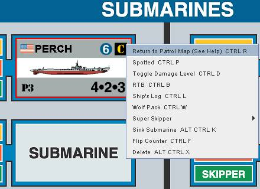
| |
VI. Assuming all went well for the USS Perch, she completes her patrol and proceeds to Brisbane, where her menu has a topical selection added...
|
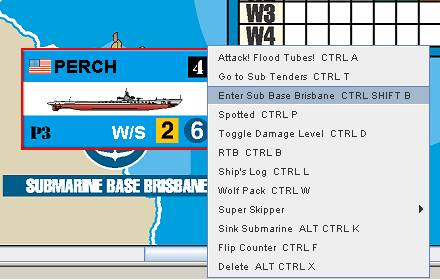
| |
VII. You guessed it, USS Perch's counter has traveled across the map to the Sub Base Brisbane display...
|
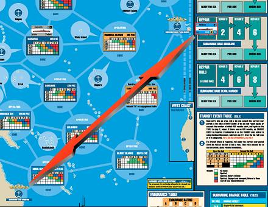
| |
VIII. But USS Perch isn't quite docked in the base yet. She now needs to use the following menu item...
|
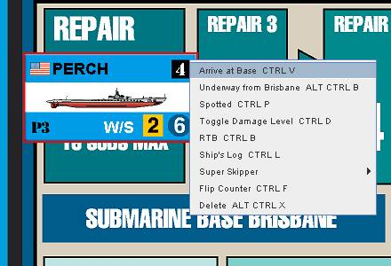
| |
IX. "Arriving" at base not only rotates the counter, but will also clear out any no-longer-applicable (built-in) counters, like RTB, Spotted & Damage levels. It also reduces the menu even further, with yet another option arising... "PREPARE FOR SEA." Which will rotate the sub back to level, allow her to fit in the broom box, and bring us full circle to item I above in this "tour."
|
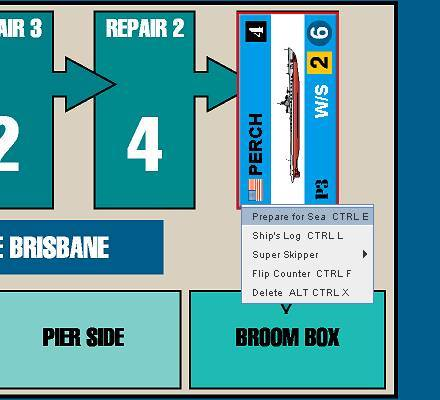
| |
X. Please note that most of the above tour menu commands would not be available if you weren't in similar circumstances. For instance, if you were on Pearl on the map, the selection would read "ENTER SUB BASE PEARL HARBOR CTRL P," And "ARRIVE..." isn't available anywhere but on a base or tender, etc. Also note that Toggling a Super Skipper on allows more menu selections in the Super Skipper sub-menu...
|
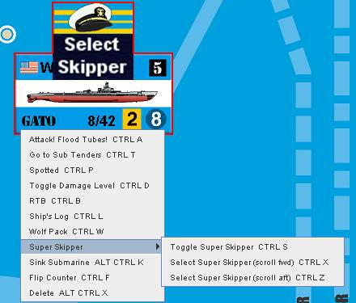
|
7. Known Problems :
| |
I. RETURN TO PATROL MAP bug - There is a
Vassal "bug" (or design choice?) that
affects this module in two places and can be triggered two different ways...
The bug affects the Sub Tenders Display (excepting
Surabaya) and the Combat Display by disabling and/or greying
out the RETURN TO PATROL MAP menu command.
This can be triggered by either loading a saved game, or dragging a counter to either of those locations (and bypassing the menus).
|
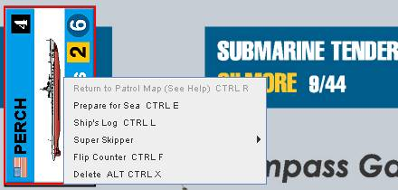
| |
Fortunately, this shouldn't have too overwhelming of an effect because...
| |
A) Not only should you not save a game in the middle of combat (Excuse me! Mr. Destroyer Captain-san, can you hold off your depth charge run until tomorrow after work? Ah, dumb alligators! [aka: domo arigato] ), you do have the "CURRENT AREA" markers to show where a sub came from before
combat.
B) In the case of the Sub Tenders display, it says it right on the display
where the sub is supposed to be. So you should be able to manually return the sub counter to wherever
that particular sub tender's counter is (on the patrol map).
|
(What is happening is that Vassal creates the "Return" command on the fly and notes the origin/return-destination for the counter, but doesn't save that information in the saved games. In the case of dragging the counter, you're bypassing the menus and thus Vassal's part in the aforementioned process.)
|
8. Miscellaneous Information:
| |
I. Note that zooming the map, both in and out, will take some time due to the size of the graphics (especially so, the first time in each direction), as will loading the Campaign or a saved game, and the program may appear to be locked-up for awhile.
II. A lot of the automation for the WAR PERIOD CUPS counters depends on the counters being in the right places. If for any reason you drop a counter in the wrong place, or accidentally hit the "RETURN ALL COUNTERS..." or "PREPARE FOR RE-SEED" buttons, remember this button is your friend...
|
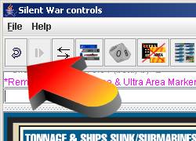
| |
III. In most cases, hitting ENTER will accomplish the same thing as CTRL-F (i.e. for flipping counters).
IV. The up & down arrows can be substituted for CTRL-V and CTRL-E when arriving/departing port.
V. End users may optionally disregard the use of "built-in" Submarine status counters (shown at left below) and use those provided in the Vassal counter tray(s) (shown at right below). Actually, any part of this module is optional! You can combine parts of this module with parts of your original Silent War game in any way that works for you!
|
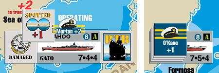
| |
VI. Why do I always start with version 0.95 and where is the final version? An original "final" version (i.e. v1.00) is NEVER the final version. There is always something that can be improved. Too often there is something that needs to be fixed... Starting my releases with v0.95, is my ode to the inevitable! (and being as you're currently reading help from v0.96, or higher! ...I told you so! *grin*)
|
|
|